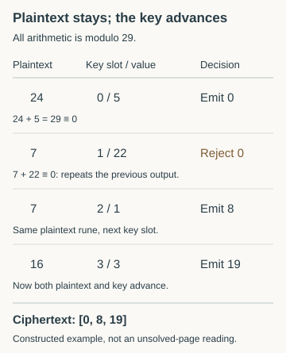

Key alignment, skip limits and beam search
Follow a rejected key slot, distinguish permitted paths from beam pruning, and diagnose decoder failures with known controls.
On this page
A key is a sequence of values. An alignment says which position in that sequence applies to each ciphertext rune. Knowing the sequence does not automatically tell you the alignment. This distinction matters whenever a proposal skips key values, inserts an interrupter, or resets the key at a word, line or page boundary.
This guide explains the terms used in the planted decoder controls. Its numerical example is constructed for teaching; it is not a decoding of an unsolved manuscript page.
Key values and key slots
A key value is the number used in the arithmetic. A key slot is its position in the sequence. In [5, 22, 1, 3], slot zero holds 5 and slot one holds 22. Two different slots can contain the same value, so tracking values alone can lose alignment information.
For ordinary addition on the 29-rune alphabet, encryption is c = (p + k) mod 29 and decryption is p = (c − k) mod 29. Here p, c and k are indices or residues, not Gematria Primus prime values. See rune indices and prime values for that distinction.
A single rejected key slot changes what follows
Take plaintext indices [24, 7, 16] and key slots [5, 22, 1, 3]. In this example only, always reject a key slot when it would repeat the previous ciphertext rune. Rejection consumes the key slot but keeps the same plaintext rune for another attempt.

Decode [0, 8, 19] using | Key values | Recovered indices |
|---|---|---|
| Correct accepted slots 0, 2, 3 | 5, 1, 3 | 24, 7, 16 |
| Rigid slots 0, 1, 2 | 5, 22, 1 | 24, 15, 18 |
The rigid decoder gets the first rune right and then uses the wrong slots. Its failure does not show that the key values are wrong. Conversely, granting arbitrary skips would add many choices: an alignment rule needs a stated reason for each permitted skip.
A decoder's permitted moves
A transition rule defines how a candidate can move from one position to the next. The collision-only decoder in our experiment permits a skipped slot only if that slot, combined with the candidate plaintext rune, would have reproduced the preceding ciphertext rune.
A skip limit caps the number of consecutive rejected slots considered at one step. If the true alignment needs four skips and the decoder allows at most three, that path is outside the model. Increasing the number of candidates retained does not introduce the missing fourth-skip transition.
An extra advance caused by a line boundary or another rule is a different mechanism. It might accidentally satisfy the collision test, but it is not generally covered by it. State reset and advance rules explicitly; “skip-aware” does not mean “can handle every alignment.”
What beam width controls
A beam search keeps several candidate prefixes as it reads the ciphertext. It extends each retained prefix using the permitted transitions, scores the extensions, and keeps only a fixed number. That number is the beam width. Pruning means discarding a candidate to stay within the width.
A width of 64 does not mean 64 complete keys or 64 total trials. Up to 64 prefixes can survive each step, and each may have several allowed extensions. The complete set of attempted extensions depends on the earlier pruning decisions.
A wider beam can retain a promising path that a narrower one discarded. It cannot fix a prohibited transition, and it does not guarantee that the final highest-scoring output is the true plaintext. In our declared implementation, the score ranks cumulative quadgram totals, with a deterministic tie rule. The separately reported normalized score has a different denominator when rune labels contain different numbers of letters.
Four different outcomes to record
| Outcome | Meaning in a planted control |
|---|---|
| True alignment is invalid | A required transition is prohibited by the model or skip bound. |
| True prefix is pruned | The path was permitted but lost its place among the retained candidates. |
| True path survives but does not win | Another retained candidate ranks higher under the declared score and tie rule. |
| Winning text passes the score threshold | The score accepts it; its rune sequence can still be incorrect. |
These distinctions require known truth, so a planted control records exact rune recovery and the encoder's accepted slots. In a real unsolved-page search, those answers are unavailable. A high score alone cannot tell you which explanation applies. Also distinguish exact plaintext from exact slot alignment: different paths can sometimes produce the same plaintext, or different plaintexts can share a ciphertext under a lossy rule.
Use the controls before interpreting a failure
First verify ordinary addition with a known key. Then introduce the particular skip, rewrite or reset rule you want to investigate and keep its parameters fixed. Test wrong keys too. Save the complete output, every alignment choice, the selection rule and exact-recovery measurements. The decoder experiment supplies all these traces for four artificial encoders.
The scorer controls examine whether a fixed English score accepts meaningful text in different languages. The search-maximum controls examine the effect of keeping the best result from many keys. Neither replaces testing the decoder's own transition rules. Continue with search space and bounds and evaluating candidate readings.